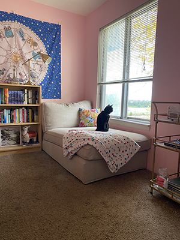

To sum it up...
I'm a detail-oriented creative backed by the power of positive thinking and espresso. I love everything from illustration and pattern design to the perfectly aligned pixels of the web.
As a self-proclaimed nerd, I'm always looking for a new book to read or a new course to take to expand my skillset.
Education & Experience
Education
2013 - 2015: The Modern College of Design
Associates Degree of Applied Business in Advertising Art
March 2021 - Present: Treehouse Techdegree Program
Currently working to complete the Front End Web Developer Treehouse Techdegree.

Experience
August 2015 - July 2017: Graphica, LLC • Graphic Designer
Created logos, business cards, flyers, and other printed materials for clients such as Dayton Children's Hospital, Honeywell Aerospace, and Airstream.
January 2018 - Present: The Jewish Federation of Greater Dayton • Web & Social Media Coordinator & Graphic Designer
Responsible for maintaining and designing the jewishdayton.org website, corresponding Facebook pages, and email campaigns as well as print materials such as event branding, brochures, flyers, and other branded materials.
Goals
I want to master the process of developing websites and grow my knowledge, skills and abilities in:
- HTML
- CSS
- JavaScript
- Pyton
- Ruby
I would like to work for a web design firm creating beautiful, responsive websites that help brands tell their stories.